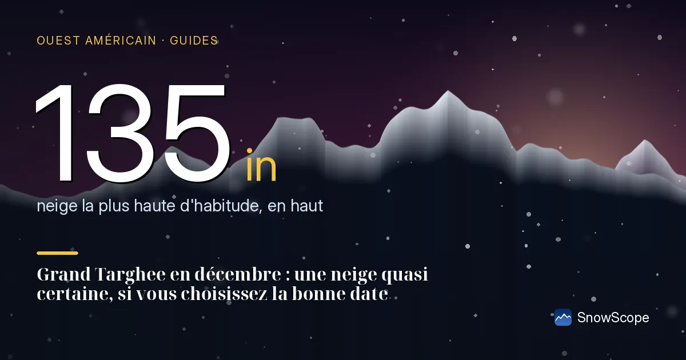

Grand Targhee en décembre : une neige quasi certaine, si vous choisissez la bonne date
Si vous cherchez une neige de décembre presque garantie, Grand Targhee est la réponse dans notre historique américain : à mi-pente, chacun des 46 hivers avait au moins 20 in (50 cm) le 15 décembre. Ce n'est pas le billet le moins cher de l'Ouest américain, donc tout l'enjeu budget consiste à choisir le bon jour.
Consultez les prévisions neige en temps réel pour Grand Targhee Resort sur l'application SnowScopeHauteurs de neige, alertes poudreuse et carte 3D, gratuitement.
La certitude, en chiffres
À mi-pente de Targhee, vers 8 720 ft (2 658 m), on compte en général 32 in (81 cm) le 1er décembre, 46 in (118 cm) le 15 décembre et 52 in (131 cm) le jour de Noël. Au sommet, autour de 9 840 ft (2 999 m), il y a 70 in (179 cm) un 15 décembre typique.
Même un décembre maigre (un hiver sur dix) laisse 31 in (79 cm) à mi-pente le 15. La part d'hivers avec une bonne neige y est de 96 % la première semaine de décembre et de 100 % pour chacune des trois semaines suivantes. La neige qui tient arrive en général début octobre.

Ce que coûte une journée
Pour 2026-27, le billet journée en ligne de Grand Targhee va de 125 $ à 180 $ selon la date choisie, et le guichet coûte 10 $ de plus. Les dates de vacances vont du 24 décembre au 3 janvier, période où il faut s'attendre au haut de la fourchette.
Deux autres faits à retenir : les forfaits multi-jours reviennent moins cher par jour plus on en achète, et la station a annoncé le 20 novembre 2026 comme jour d'ouverture. Cela laisse près d'un mois de début décembre avant les vacances, la meilleure fenêtre pour les prix bas.

Targhee ou Snow King ?
Snow King, la colline de la ville à Jackson, démarre à 100 $ pour un adulte et avait 28 in (71 cm) à mi-pente un 15 décembre typique, avec 87 % des hivers au-dessus de 20 in. Moins cher et plus pratique, mais nettement moins de neige.
Jackson Hole, la grande station de la vallée, avait 37 in (93 cm) à mi-pente un 15 décembre typique selon nos chiffres ; nous n'avons pas comparé son prix. Côté neige seule, Targhee l'emporte en décembre.
Où dormir pour moins cher
Targhee domine Driggs, côté Idaho des Tetons, et la plupart des visiteurs logent soit là, soit de l'autre côté du col à Jackson. Le côté Idaho est plus tranquille et plus proche de la station ; Jackson offre plus de choix. Nous n'avons pas comparé les prix d'hébergement, vérifiez donc les deux pour vos dates.
La certitude tient-elle toujours ?
Globalement oui. Sur les 15 premiers hivers de notre relevé, la mi-pente avait 51 in (130 cm) un 15 décembre typique ; sur les 15 derniers, 40 in (102 cm), et dans les deux périodes chaque hiver avait 20 in ou plus. L'hiver dernier a été du genre maigre, avec 24 in (62 cm) à cette date : de quoi skier, mais pas l'épaisseur habituelle de Targhee.
Conseils aux skieurs
- Réservez vos dates de début décembre en ligne, bien avant le 24 décembre, pour le bas de la fourchette de prix.
- Achetez en ligne plutôt qu'au guichet : le tarif sur place coûte 10 $ de plus.
- Si vous venez de Jackson en voiture, vérifiez Teton Pass avant de partir : il est raide et ferme en cas de tempête.
- Une neige abondante et précoce n'est pas toujours stable : lisez le bulletin avalanche avant de skier hors-piste.
Références et crédits
- Grand Targhee, winter lift tickets 2026-27 (official) www.grandtarghee.com/tickets-passes/lift-tickets/winter-lift-tickets
- Snow King Mountain, winter day tickets (official store) store.snowkingmountain.com/en/catalogue/category/500-winter-lift-tickets/510-day-ticket_447/
- OpenSkiMap (mapped lifts and runs) openskimap.org/
- avalanche.org, US avalanche centers and forecasts avalanche.org/
À propos de ces chiffres
Chiffres de neige : historique SnowScope, 46 hivers passés (1980-81 à 2025-26) aux altitudes indiquées (bas, mi-pente, sommet), une reconstitution de la neige passée pour une zone, corrigée de l'altitude (base ERA5-Land ; Snow_Hydro 1 km pour le Maroc), pas les bulletins de la station. Neige actuelle : la carte SnowScope. Remontées, pistes et altitudes : cartographie OpenSkiMap. Prix : les pages officielles listées ci-dessous, consultées le 13 novembre 2026 ; les prix dynamiques varient avec la date et la demande.
Bulletins d'avalanche officiels: Bridger-Teton Avalanche Center
Citer ce bulletin
Pour la recherche, l'enseignement ou la presse : chiffres et graphiques réutilisables librement sous CC BY 4.0 avec cette citation.
SnowScope (2026), Grand Targhee en décembre : une neige quasi certaine, si vous choisissez la bonne date, https://snowscope.app/blog/fr/2026/11/grand-targhee-december-snow-and-ticket-prices.html, consulté le 2026-11-14
SnowScope (Atlas Labs). (2026, November 14). Grand Targhee en décembre : une neige quasi certaine, si vous choisissez la bonne date. SnowScope snow reports. https://snowscope.app/blog/fr/2026/11/grand-targhee-december-snow-and-ticket-prices.html
BibTeX
@misc{snowscope2026grandtargheedecembersnow,
author = {{SnowScope (Atlas Labs)}},
title = {Grand Targhee en décembre : une neige quasi certaine, si vous choisissez la bonne date},
year = {2026},
month = nov,
howpublished = {\url{https://snowscope.app/blog/fr/2026/11/grand-targhee-december-snow-and-ticket-prices.html}},
note = {Published 2026-11-14 13:57 UTC; accessed 2026-11-14}
}· CC BY 4.0 · Méthodes, données et outils →
Suivre Grand Targhee Resort
Gratuit : un message quand la neige arrive, et la météo chaque matin.